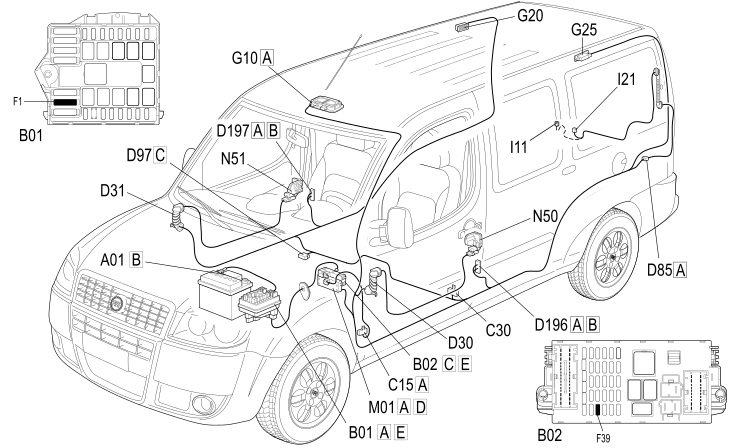

E2510 COURTESY LIGHTS - COMPONENT LOCATION
- Path
- Electrical equipment > 1 ELECTRICAL FUNCTIONS > E25 INTERIOR LIGHTING > E2510 COURTESY LIGHTS > E2510 COURTESY LIGHTS - COMPONENT LOCATION
- Kind
- component location drawing
- Applies to
- engines: 1.4 8v, 1.6 16v, 1.3 JTD 16V, 1.9 JTD 8V; production: da 12/03; only with equipment: Sliding door and Long wheelbase version and MY 2005
- Interactive page
- https://sloeber94.github.io/elrnDB-fDbl/en/#/223001744
Applies to: engines: 1.4 8v, 1.6 16v, 1.3 JTD 16V, 1.9 JTD 8V; production: da 12/03; only with equipment: Sliding door and Long wheelbase version and MY 2005

Applies to: engines: 1.4 8v, 1.6 16v, 1.3 JTD 16V, 1.9 JTD 8V; production: da 12/03; only with equipment: Cargo trim level and Sliding door and MY 2005
Component code | Description | Reference to the assembly |
|---|---|---|
JUNCTION UNIT | ||
JUNCTION UNIT UNDER DASHBOARD | ||
DASHBOARD EARTH, DRIVER'S SIDE | ||
LEFT REAR EARTH | ||
REAR/DRIVER'S FRONT DOOR COUPLING | ||
REAR/PASSENGER FRONT DOOR COUPLING | ||
TAILGATE/REAR SEAL | ||
SHORT CIRCUITING COUPLING | ||
LEFT SLIDING SIDE DOOR COUPLING | ||
RIGHT SLIDING SIDE DOOR COUPLING | ||
FRONT COURTESY LIGHT | ||
REAR COURTESY LIGHT (CENTRE) | ||
LEFT REAR COURTESY LIGHT | ||
IGNITION SWITCH | ||
BOOT OPENING SWITCH | ||
SWITCH ON REAR DOOR | ||
BODY COMPUTER | ||
DRIVER'S FRONT DOOR LOCK GEARED MOTOR | ||
PASSENGER FRONT DOOR LOCK GEARED MOTOR |
Topics linked from this page (25)
- 5505A multi-function components
- 5520A ignition switch
- 7005N front door central locking system
- 7015B tailgate locking/opening devices
- 7020P swinging rear door central locking
- 7040E interior courtesy light system
- B001 JUNCTION UNIT
- B002 JUNCTION UNIT UNDER DASHBOARD
- C015 DASHBOARD EARTH, DRIVER'S SIDE
- C030 LEFT REAR EARTH
- D030 REAR/DRIVER'S FRONT DOOR COUPLING
- D031 REAR/PASSENGER FRONT DOOR COUPLING
- D085 TAILGATE/REAR SEAL
- D097 SHORT CIRCUITING COUPLING
- D196 LEFT SLIDING SIDE DOOR COUPLING
- D197 RIGHT SLIDING SIDE DOOR COUPLING
- G010 FRONT COURTESY LIGHT
- G020 REAR COURTESY LIGHT (CENTRE)
- G025 LEFT REAR COURTESY LIGHT
- H001 IGNITION SWITCH
- I011 BOOT OPENING SWITCH
- I021 SWITCH ON REAR DOOR
- M001 BODY COMPUTER
- N050 DRIVER'S FRONT DOOR LOCK GEARED MOTOR
- N051 PASSENGER FRONT DOOR LOCK GEARED MOTOR